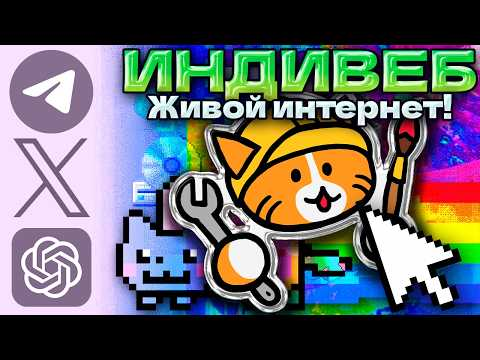

IndieWeb сегодня
 Кольцо Чикиряо: сайты, которые стоит открыть
Кольцо Чикиряо: сайты, которые стоит открыть
 Кольцо Чикиряо
Кольцо Чикиряо

| |
 Что сейчас в моде
Что сейчас в моде
Темы:
 Кнопки 88×31
Кнопки 88×31
 Собери свою страничку
Собери свою страничку
 Гостевая книга
Гостевая книга
Не грузится? Открой гостевую в новой вкладке ↗
 Посмотреть ещё
Посмотреть ещё

Видео на YouTube «А ты знаешь… Что есть ДРУГОЙ ИНТЕРНЕТ?» MrAlexBat. Хороший рассказ про малый веб, Neocities и тех, кто делает себе сайты сегодня. Если после этой экскурсии захочется своё место в интернете, начни с него.
Спасибо, что прошёл всю экскурсию!